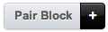
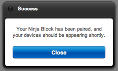

Welcome! Here is quickstart information to get you up and running as quickly as possible. Please click the track you are running on the top right.
In this track we are going to hook some hardware up to the Ninja platform.
$ git clone https://github.com/ninjablocks/client.git
$ cd client
$ ./bin/install.sh
$ npm install -g ninja-toolbelt
$ ninja create drivers/my-first-driver
$ cd drivers/my-first-driver
$ npm init
$ cd ../..
$ NODE_ENV=hacking node client
The start of stdout should look like this:
$ NODE_ENV=hacking node client
[Mon, 22 Apr 2013 21:18:06 GMT] (DEBUG) Binding default loadToken method
[Mon, 22 Apr 2013 21:18:06 GMT] (DEBUG) Binding default saveToken method
[Mon, 22 Apr 2013 21:18:06 GMT] (DEBUG) Binding default loadSerial method
[Mon, 22 Apr 2013 21:18:06 GMT] (DEBUG) Binding default saveSerial method
[Mon, 22 Apr 2013 21:18:06 GMT] (info) Successfully loaded token from file
[Mon, 22 Apr 2013 21:18:06 GMT] (info) Successfully loaded serial from file
[Mon, 22 Apr 2013 21:18:06 GMT] (info) This Ninja's Serial: XXXXXXXXXXXXXXXX
[Mon, 22 Apr 2013 21:18:06 GMT] (info) loadModule: platform
[Mon, 22 Apr 2013 21:18:06 GMT] (DEBUG) versioning: using version callback (platform)
[Mon, 22 Apr 2013 21:18:06 GMT] (info) platform: No device specified
Copy the serial number to your clipboard, in this case XXXXXXXXXXXXXXXX, you will need it in the next step.
Go to a.ninja.is and sign in. When you have reached the home screen, click the this button in the top right of the screen:

Next, paste the serial number you copied in the previous step in the dialogue box and hit "Submit". Your browser should look like this:

And your client std should look like this:
[Mon, 22 Apr 2013 21:18:10 GMT] (info) Attempting to activate...
[Mon, 22 Apr 2013 21:31:38 GMT] (DEBUG) Attempting to save token to file...
[Mon, 22 Apr 2013 21:31:38 GMT] (info) Successfully saved token to file
[Mon, 22 Apr 2013 21:31:38 GMT] (info) Received authorization, confirming...
[Mon, 22 Apr 2013 21:31:38 GMT] (info) Confirmed authorization
[Mon, 22 Apr 2013 21:31:38 GMT] (info) Please restart this process to connect!
➜ client git:(master) ✗